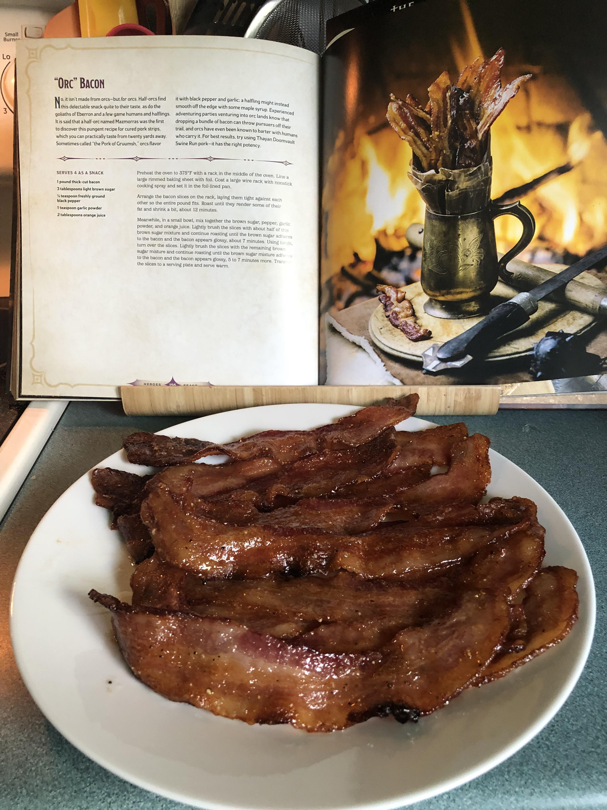

"Orc" Bacon

Description
No, it isn't made from orcs - but for orcs. Half-orcs find this delectable snack quite to their taste, as to the goliaths of Eberron and a few game humans and halflings. It is said that a half-orc named Mazmorras was the first to discover this pungent recipe for cured pork strips, which you can practically taste from twenty yards away. Sometimes called "the Pork of Gruumsh," orcs flavor it with black pepper and garlic; a halfling might instead smooth off the edge with some maple syrup. Experienced adventuring parties venturing into orc lands know that dropping a bundle of bacon can throw pursuers off their trail, and orcs have even been known to barter with humans who carry it. For best results, try using Thayan Doomvault Swine Run pork: it has the right potency.
Ingredients
- 1 pound thick cut bacon
- 3 tablespoons light brown sugar
- 1/2 teaspoon freshly ground black pepper
- 1 teaspoon garlic powder
- 2 tablespoons orange juice
Steps
- Preheat the oven to 375 degrees F with a rack in the middle of the oven. Line a large rimmed baking sheet with foil. Coat a large wire rack with nonstick cooking spray and set it in the foil-lined pan.
- Arrange the bacon slices on the rack, laying them tight against each other so the entire pound fits. Roast until they render some of their fat and shrink a bit, about 12 minutes.
- Meanwhile, in a small bowl, mix together the brown sugar, pepper, garlic powder, and orange juice. Lightly brush the slices with about half of this brown sugar mixture and continue roasting until the brown sugar adheres to the bacon and the bacon appears glossy, about 8 minutes. Using tongs, turn over the slices. Lightly brush the slices with the remaining brown sugar mixture and continue roasting until the brown sugar mixture adheres to the bacon and the bacon appears glossy, 5 to 7 minutes more. Transfer the slices to a serving plate and serve warm.